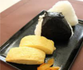

エステQ＆A
-

Q.なぜエステ後は食事をしてはいけないのでしょうか?
A.身体の代謝がよくなり、いつもより栄養が吸収されやすいからです。
エステのあとは身も心もリフレッシュ♩その後に、お腹がすいて食事をしたくなることがあるかと思います。 しかし、「エステのあと２時間は食事をしないでください」と言われたことはありませんか？ なぜエステの後すぐに食事をしてはいけないのでしょうか？ 食事をしてはいけない理由は２つあります。
1.身体の代謝がよくなっている エステは身体の働きを活性化させます。そうすると、身体に良くないものを出すと同時に、食べ物や飲み物が普段より よけいに栄養や脂肪を吸収してしまいます。
2.食事が身体の負担になる エステの後は披露した状態になります。そのため、食事をとること自体が身体の負担になってしまいます。